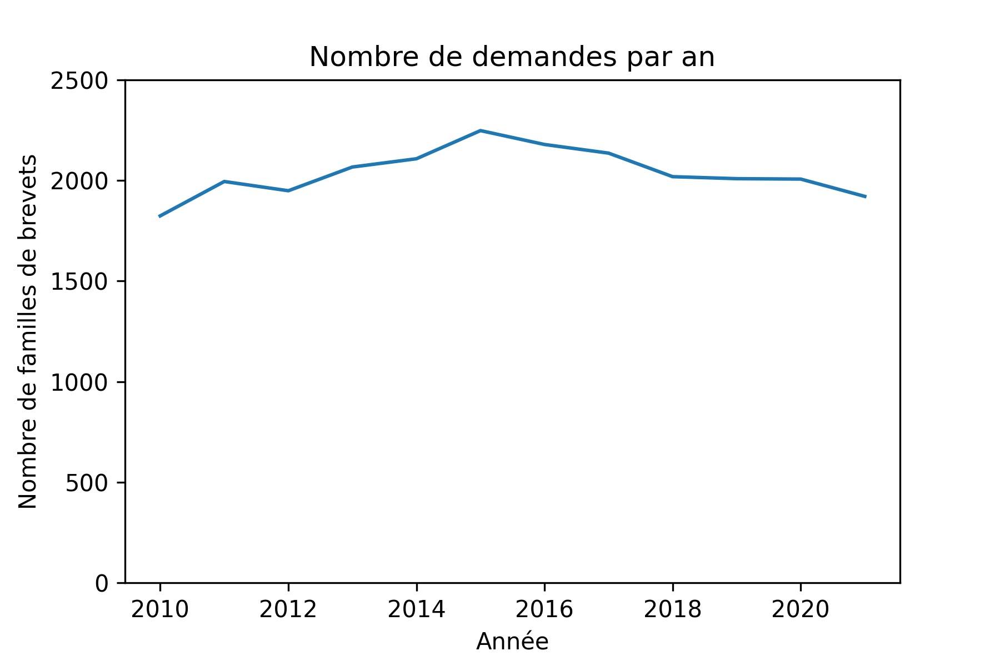

Les brevets déposés par des personnes
publiques, notamment des institutions relevant de l'enseigement supérieur et de la recherche
17 juin 2024
Julia GRANDHAY
Département Ingénierie et science des
données
SIES - MESR
Plan
- Problématique
- Définitions
- Travaux sur les brevets issus de la recherche de l'OST et de l'OEB
- Méthodologie
- Les brevets identifiés dans la base PATSTAT
- Nombre de demandes par office
- Stabilité des demandes entre 2010 et 2021
- Les thématiques des brevets publiés
- Les déposants des brevets
- Les collaborations entre déposants
- Les collaborations entre personnes publiques
- Les collaborations entre personnes publiques et privées
- Les éléments clefs à retenir
Problématique
- Où sont déposés les brevets des déposants publics et para-publics ?
- Quels sont les domaines couverts par ces brevets ?
- Qui sont les déposants publics et para-publics de ces brevets ?
- Collaborent-ils avec d'autres déposants ?
- Ces collaborations impliquent-elles des personnes privées ?
Les éléments clefs à retenir
- 88,55 % des familles de brevets sont déposées par des personnes privées.
- 7,02 % sont déposées uniquement par des personnes publiques et 4,43 % par un ensemble de personnes publiques et privées
-
Au total, pour les brevets où au moins une personne publique est déposante :
- 24 506 familles de brevets
- 93 925 brevets, dont 44 336 ont été délivrés
- Les brevets ont été déposés auprès de 67 offices différents
- Les brevets sont massivement déposés auprès de l'INPI, de l'OEB, de l'Organisation mondiale de la protection intellectuelle et de l'office des États-Unis
- Le nombre de demandes, par famille de brevets, est stable entre 2010 et 2021
- Domaines les plus couverts par les brevets : H. Électricité, C. Chimie; métallurgie et G. Physique
- Les organismes de recherche sont les principaux déposants publics de brevets, avec le Commissariat à l’énergie atomique et aux énergies alternatives, le Centre national de la recherche scientifique et l'Institut national de la santé et de la recherche médicale comme principaux acteurs
- Les réseaux des collaborations s'organisent de manière très dense autour du CNRS
Définitions
- Brevet : Le brevet est un titre de propriété industrielle.
- Famille de brevets : Une famille de brevets simple est une collection de documents de brevets considérés comme couvrant une seule invention. Le contenu technique couvert par les demandes est réputé identique. Source Office européen des brevets
- Brevet publié : La demande de brevet est rendue publique, 18 mois après le premier dépôt de celle-ci. En France, cette publication s’effectue dans le Bulletin officiel de la propriété industrielle (BOPI) et simultanément sur le registre des brevets, de l’INPI. Source INPI
- Brevet délivré : En France, un brevet délivré voit la mention de la délivrance indiquée au Bulletin officiel de la propriété industrielle (BOPI). Il est valable pendant 20 ans à partir de la date de dépôt, sous réserve que le demandeur paie les annuités. Source INPI
Travaux sur les brevets issus de la recherche de l'OST et de l'OEB
- En septembre 2024, le Hcéres a publié un communiqué de presse sur une étude comparative réalisée par l'OST sur les dépôts à l’Office européen des brevets en 2023. Nous n'avons pas trouvé le rapport. Ils ont trouvé que 14 % des brevets en France sont issus de la recherche publique ; taux le plus élevé parmi les 10 premiers pays déposants à l’OEB.
- En octobre 2024, l'Office européen des brevets a publié une étude, réalisée par l'institut allemand Fraunhofer ISI, sur le rôle des universités européennes en matière de dépôts de brevets et d'innovation de 2000 à 2020.
-
Cette étude s'intéresse aux brevets universitaires qui sont compris comme des brevets
déposés directement par des universités, mais aussi par d'autres types d'organisation du
moment que les inventeurs sont des chercheurs universitaires ("demandes indirectes").
Ils ont trouvé que 10,9 % des demandes déposées par des Français ont été faites par des universités (et écoles ?) sur la période 2000-2020.
Nos travaux et perspectives
-
Dans les prochaines diapositives, nous allons vous présenter nos travaux avec :
- un point sur la méthodologie de traitement de la base PATSAT,
- les principaux chiffres sur les demandes, les thématiques, les déposants et leurs collaborations.
- Dans le futur, nous souhaiterions compléter notre démarche actuelle en identifiant mieux les chercheurs inventeurs de brevets grâce à leurs publications (méthodologie de Fraunhofer ISI pour l'étude de l'OEB).
Méthodologie
- Analyse des données issues du traitement de la base PATSTAT de l'Office européen des brevets (OEB)
- Brevets déposés depuis 2010 dont au moins une des parties est localisée en France
Nombre de demandes par office
| Ordre | Office (pays au format ISO 3166) | Nombre de demandes déposées | Ordre | Office (pays au format ISO 3166) | Nombre de demandes déposées | |
|---|---|---|---|---|---|---|
| 1 | FR | 18 174 | 35 | NZ | 65 | |
| 2 | EP | 17 335 | 36 | IN | 65 | |
| 3 | WO | 16 651 | 37 | TR | 55 | |
| 4 | US | 14 615 | 38 | UA | 54 | |
| 5 | JP | 5 526 | 39 | DE | 54 | |
| 6 | CN | 5 098 | 40 | NO | 46 | |
| 7 | CA | 3 185 | 41 | CO | 43 | |
| 8 | KR | 2 242 | 42 | FI | 32 | |
| 9 | ES | 2 159 | 43 | PH | 27 | |
| 10 | BR | 1 326 | 44 | CY | 26 | |
| 11 | AU | 1 223 | 45 | AP | 25 | |
| 12 | RU | 715 | 46 | IT | 24 | |
| 13 | DK | 711 | 47 | PE | 22 | |
| 14 | IL | 583 | 48 | BE | 17 | |
| 15 | PL | 578 | 49 | CU | 14 | |
| 16 | PT | 389 | 50 | UY | 11 | |
| 17 | TW | 388 | 51 | CR | 10 | |
| 18 | MX | 344 | 52 | EC | 8 | |
| 19 | SG | 303 | 53 | CH | 7 | |
| 20 | ZA | 266 | 54 | SM | 6 | |
| 21 | HU | 222 | 55 | NL | 5 | |
| 22 | MA | 143 | 56 | GT | 4 | |
| 23 | AR | 138 | 57 | GE | 4 | |
| 24 | HR | 130 | 58 | DO | 4 | |
| 25 | HK | 119 | 59 | MD | 4 | |
| 26 | EA | 92 | 60 | AT | 3 | |
| 27 | SI | 89 | 61 | JO | 3 | |
| 28 | MY | 88 | 62 | ME | 2 | |
| 29 | CL | 84 | 63 | LU | 2 | |
| 30 | LT | 81 | 64 | SE | 2 | |
| 31 | SA | 76 | 65 | NI | 2 | |
| 32 | RS | 70 | 66 | EG | 1 | |
| 33 | TN | 68 | 67 | RO | 1 | |
| 34 | GB | 66 |
Stabilité des demandes entre 2010 et 2021

Les thématiques des brevets publiés
- Domaines les plus couverts : H. Électricité, C. Chimie; métallurgie et G. Physique
-
Quelques exemples de titres :
- PROCEDE D'ORIENTATION AUTOMATIQUE D'UN DISPOSITIF DE PANNEAU SOLAIRE ET DISPOSITIF FONCTIONNANT SELON CE PROCEDE
- CAPTEUR POUR LA MESURE DES BESOINS D'INSULINE D'UN PATIENT ET PROCEDE DE FABRICATION DE CELUI-CI
- PROCEDE DE DETECTION D'UN ANALYTE DANS UN FLUIDE CORPOREL
Les déposants des brevets (1/3)
- En plus des personnes physiques et morales, 32 catégories de personnes publiques ont été identifiées (catégories issues de Paysage).
- Les 10 plus actives :
| Catégorie | Nombre de brevets déposés | Part du total des brevets déposés |
|---|---|---|
| Organisme de recherche | 72 327 | 56,10 % |
| Université | 28 270 | 21,93 % |
| Centre hospitalier | 7 406 | 5,74 % |
| École d'ingénieurs | 4 418 | 3,43 % |
| Grand établissement | 3 681 | 2,86 % |
| Établissement public expérimental | 3 356 | 2,60 % |
| Grand établissement relevant d'un autre département ministériel | 2 057 | 1,60 % |
| École normale supérieure | 1 051 | 0,82 % |
| Centre de lutte contre le cancer | 784 | 0,61 % |
| Structure de recherche | 739 | 0,57 % |
Les déposants des brevets (2/3)
- 309 personnes publiques et para-publiques ont été identifiées
- Les 10 personnes publiques qui déposent le plus de brevets sont :
| Organisme | Nombre de brevets déposés | Part du total des brevets déposés |
|---|---|---|
| Commissariat à l’énergie atomique et aux énergies alternatives | 27 658 | 19,26 % |
| Centre national de la recherche scientifique | 27 377 | 19,06 % |
| Institut national de la santé et de la recherche médicale | 10 970 | 7,64 % |
| IFP Energies nouvelles | 8 186 | 5,70 % |
| Assistance publique - Hôpitaux de Paris | 2 832 | 1,97 % |
| Université Claude Bernard - Lyon 1 | 2 589 | 1,80 % |
| Sorbonne Université | 2 090 | 1,46 % |
| Institut national de recherche pour l'agriculture, l'alimentation et l'environnement | 2 032 | 1,41 % |
| Aix-Marseille Université | 1 990 | 1,39 % |
| Université de Bordeaux | 1 905 | 1,33 % |
Les déposants des brevets (3/3)
- Pour les 10 premières catégories, les plus gros déposants représentent généralement une part importante des brevets déposés dans leur catégorie.
| Catégorie | Organisme | Nombre de brevets | Part de l'organisme dans sa catégorie |
|---|---|---|---|
| Centre de lutte contre le cancer | Centre de lutte contre le cancer Léon-Bérard | 333 | 40,51 % |
| Centre hospitalier | Assistance publique - Hôpitaux de Paris | 2 832 | 36,89 % |
| Grand établissement | Bordeaux INP | 1 022 | 26,98 % |
| Grand établissement relevant d'un autre département ministériel | Institut Mines-Télécom | 841 | 40,85 % |
| École normale supérieure | École normale supérieure de Lyon | 470 | 44,72 % |
| Établissement public expérimental | Université Grenoble Alpes | 1 251 | 35,65 % |
| Organisme de recherche | Commissariat à l’énergie atomique et aux énergies alternatives | 27 658 | 33,58 % |
| Structure de recherche | Généthon | 505 | 63,60 % |
| Université | Université Claude Bernard - Lyon 1 | 2 589 | 8,11 % |
| École d'ingénieurs | École supérieure de physique et de chimie industrielles de la ville de Paris | 765 | 16,04 % |
Les collaborations entre déposants
- 189 522 des familles de brevets, soit 88,55 %, sont déposées par des personnes privées.
- 15 024 sont déposées uniquement par des personnes publiques, soit 7,02 %, et 9 482 par un ensemble de personnes publiques et privées, soit 4,43 %.
- Dans ce dernier cas, beaucoup de ces personnes privées sont des personnes physiques
Les collaborations entre personnes publiques
- Le réseau des collaborations s'organise de manière très dense autour du CNRS

Les collaborations entre personnes publiques et privées
- Le réseau des collaborations s'organise également autour du CNRS
- 7 218 des co-déposants sont des entreprises privées (36,31 %), 9 481 des personnes publiques (47,70 %) ou para-publiques et 3 178 des personnes physiques (15,99 %), dont des chercheurs
- Le groupe Thalès participe à 287 familles (3,16 % des collaborations) ; STELLANTIS AUTO SAS 179 (1,97 %) ; Arkema 145 (1,60 %) ; STMicroelectronics 135 (1,49 %) ; Safran 135 (1,49 %)
Les éléments clefs à retenir
- 88,55 % des familles de brevets sont déposées par des personnes privées.
- 7,02 % sont déposées uniquement par des personnes publiques et 4,43 % par un ensemble de personnes publiques et privées
-
Au total, pour les brevets où au moins une personne publique est déposante :
- 24 506 familles de brevets
- 93 925 brevets, dont 44 336 ont été délivrés
- Les brevets ont été déposés auprès de 67 offices différents
- Les brevets sont massivement déposés auprès de l'INPI, de l'OEB, de l'Organisation mondiale de la protection intellectuelle et de l'office des États-Unis
- Le nombre de demandes, par famille de brevets, est stable entre 2010 et 2021
- Domaines les plus couverts par les brevets : H. Électricité, C. Chimie; métallurgie et G. Physique
- Les organismes de recherche sont les principaux déposants publics de brevets, avec le Commissariat à l’énergie atomique et aux énergies alternatives, le Centre national de la recherche scientifique et l'Institut national de la santé et de la recherche médicale comme principaux acteurs
- Les réseaux des collaborations s'organisent de manière très dense autour du CNRS
Merci de votre attention !
Contact
julia.grandhay@enseignementsup.gouv.fr